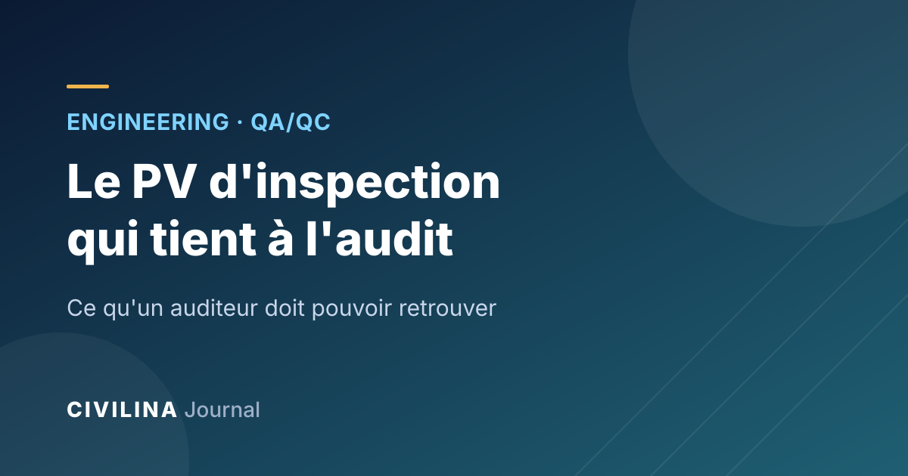

Accueil › Journal › Le PV d'inspection
Engineering · QA/QCLe PV d'inspection : ce qu'un auditeur doit pouvoir retrouver

Des mois après un contrôle, il ne reste souvent qu'une feuille signée. C'est elle qu'un auditeur, un client ou un expert ouvrira en cas de doute. Si elle dit seulement « conforme », elle ne prouve presque rien. Voici comment rédiger un procès-verbal d'inspection qui permet de retrouver, sans poser de questions, ce qui a été contrôlé, comment, par qui et avec quel résultat.
Le rôle du PV d'inspection
Le procès-verbal d'inspection est le document signé qui atteste qu'un contrôle a été réalisé, en donne le résultat et la décision qui en découle. Il est la dernière maille de la chaîne qualité d'un projet : l'exigence est fixée par les documents du marché, le contrôle est planifié dans l'ITP, et le PV en garde la preuve.
Plusieurs documents voisins coexistent sur un projet. Les distinguer évite de leur demander ce qu'ils ne peuvent pas prouver :
| Document | Ce qu'il contient |
|---|---|
| PV d'inspection | Le contrôle réalisé, son résultat et la décision, signés par les parties présentes |
| Fiche de contrôle | Les relevés détaillés d'un contrôle ; souvent annexée au PV |
| Rapport d'essai | Les résultats d'un laboratoire ou d'un essai spécifique |
| PV de réception | L'acceptation d'un ouvrage ou d'une partie d'ouvrage, avec ou sans réserves |
| Fiche de non-conformité | L'écart constaté et son traitement, lorsque le résultat n'est pas acceptable |
Le test de l'auditeur : huit questions
Un bon PV permet de répondre à ces huit questions sans rien demander à personne :
- Quoi ? Quel ouvrage, quel élément, quelle localisation précise.
- Par rapport à quoi ? Quelle exigence : plan et indice, spécification, norme et édition, ligne d'ITP.
- Comment ? Quelle méthode de contrôle, avec quel instrument.
- Quel résultat ? Les valeurs relevées, avec leurs unités, comparées au critère.
- Qui ? L'inspecteur, les témoins présents, leur fonction.
- Quand ? La date et, si utile, l'heure du contrôle.
- Quelle décision ? Accepté, refusé, ou accepté sous réserve avec référence de la non-conformité.
- Quelles preuves ? Photos, fiches de relevés, rapports d'essai, et où ils sont classés.
Si l'une de ces réponses manque, le PV reste un document administratif, pas une preuve.
Le contenu type d'un PV
| Rubrique | Contenu |
|---|---|
| En-tête | Projet, numéro de PV, date, lot, ouvrage, localisation |
| Références | Ligne d'ITP, plans et indices, spécifications, normes et éditions applicables |
| Objet du contrôle | Ce qui est vérifié et le type de point (arrêt, témoin, revue) |
| Méthode et moyens | Visuel, mesure, essai ; instruments identifiés et en cours de validité d'étalonnage |
| Résultats | Valeurs relevées ou constats, critère d'acceptation, écart éventuel |
| Décision | Accepté, refusé, accepté sous réserve ; référence de la non-conformité le cas échéant |
| Annexes | Liste des fiches, photos et rapports joints |
| Signatures | Nom, fonction, organisme et signature de chaque partie présente |
Écrire les mesures, pas seulement la conclusion
La faiblesse la plus courante d'un PV est de ne contenir qu'une case cochée « conforme ». Or une conclusion sans mesure ne peut pas être vérifiée, ni contestée, ni réutilisée. Pour chaque caractéristique mesurable, le PV ou sa fiche annexe indique :
- la valeur relevée, ou la plage des valeurs relevées, avec son unité ;
- le critère d'acceptation et sa source (plan, spécification, norme et édition) ;
- l'instrument utilisé et, si l'exigence le prévoit, la validité de son étalonnage ;
- la localisation des points de mesure, sur un croquis ou une photo si nécessaire.
Lorsque le critère n'est pas connu au moment du contrôle, le PV doit le dire plutôt que de conclure. Une valeur relevée sans critère reste utile ; une conclusion sans valeur ne l'est pas.
Signatures, présence et réserves
La signature engage. Elle doit donc correspondre à ce que chacun a réellement fait :
- pour un point d'arrêt, la signature de la partie qui libère l'étape est indispensable avant de poursuivre les travaux ;
- pour un point de témoin, le PV indique si la partie notifiée était présente ou absente, avec la preuve de la notification ;
- une partie en désaccord signe avec réserve, en écrivant l'objet de sa réserve, plutôt que de refuser de signer sans explication ;
- chaque signataire est identifié par son nom, sa fonction et son organisme, pas seulement par un paraphe.
Exemple commenté : PV de réception du ferraillage
Voici à quoi ressemble, en version simplifiée, un PV de réception du ferraillage d'une dalle. Les valeurs sont remplacées par leur nature : sur un vrai PV, elles proviennent des mesures et des documents du projet.
| Rubrique | Exemple de contenu |
|---|---|
| N° de PV | PV-[projet]-GO-[n°] |
| Ouvrage | Dalle haute du niveau 2, zone comprise entre deux files d'axes identifiées |
| Références | Ligne 3 de l'ITP gros œuvre ; plan de ferraillage indice en vigueur ; spécification du lot |
| Type de point | Point d'arrêt du maître d'œuvre |
| Contrôles | Diamètres et nombre de barres, espacements, recouvrements, enrobages, calage, propreté |
| Résultats | Valeurs relevées par zone sur la fiche annexe n° 1, comparées aux valeurs du plan |
| Décision | Accepté, ou refusé avec ouverture d'une fiche de non-conformité référencée |
| Annexes | Fiche de relevés, photos repérées, plan annoté |
| Signatures | Chef de chantier, responsable qualité de l'entreprise, représentant du maître d'œuvre |
Si le contrôle révèle un écart, le PV ne le règle pas : il renvoie vers une fiche de non-conformité, et un nouveau PV est établi après correction et recontrôle.
Numéroter, classer, retrouver
Un PV introuvable n'a pas plus de valeur qu'un PV inexistant. Trois règles simples rendent le classement fiable :
- Une codification unique, définie dans le plan qualité : projet, lot, type de contrôle, numéro chronologique.
- Un registre des PV, qui relie chaque PV à sa ligne d'ITP, son ouvrage, sa date, sa décision et ses éventuelles non-conformités.
- Un archivage prévu dès le départ, car les PV rejoignent le dossier des ouvrages exécutés remis en fin de projet.
Sur les projets importants, une plateforme de suivi fait gagner beaucoup de temps : le PV est créé depuis la ligne d'ITP, les photos y sont rattachées sur le terrain, et le registre se met à jour seul.
Quand faut-il établir un nouveau PV ?
Un PV fige une situation à un instant donné. Il ne doit pas être modifié après signature : lorsqu'une situation change, on établit un nouveau PV qui fait référence au précédent. C'est notamment le cas :
- après une correction : le recontrôle fait l'objet d'un nouveau PV, qui cite la fiche de non-conformité et le PV initial ;
- après un changement d'indice du plan ou de la spécification, si l'élément contrôlé est concerné par la modification ;
- après un événement sur l'élément déjà accepté : dégradation, intempérie, intervention d'un autre corps d'état avant l'étape suivante ;
- lorsqu'un point d'arrêt a été franchi sans libération : la situation est enregistrée en non-conformité, puis traitée comme telle.
Corriger un PV signé à la main, raturer une valeur ou remplacer une page fragilise toute la chaîne de preuve. Un PV qui en remplace un autre doit le dire clairement, avec la raison et la date.
Les erreurs fréquentes
- Un PV qui se limite à « conforme » sans valeurs ni critère.
- Des références de plan sans indice, ou de norme sans édition.
- Un PV signé après coup, sans que le signataire ait assisté au contrôle.
- Un instrument de mesure non identifié, ou dont l'étalonnage a expiré.
- Un écart noté dans le PV mais jamais ouvert en non-conformité.
- Des PV numérotés différemment selon les équipes, impossibles à relier.
Checklist avant signature
- L'ouvrage et la localisation sont décrits sans ambiguïté.
- La ligne d'ITP et les documents de référence sont cités avec indice ou édition.
- La méthode et l'instrument sont indiqués.
- Les valeurs relevées figurent, avec unités et critère d'acceptation.
- La décision est explicite ; une non-conformité est ouverte si nécessaire.
- Les annexes sont listées et jointes.
- Chaque signataire est identifié, et sa présence ou son absence est notée.
- Le PV porte un numéro unique et est inscrit au registre.
Un bon PV se reconnaît à un détail : quelqu'un qui n'était pas là peut le lire dans trois ans et comprendre exactement ce qui s'est passé.
- ISO 9001 — Systèmes de management de la qualité — Exigences (informations documentées, surveillance et mesure, libération des produits).
- ISO 10005 — Management de la qualité — Lignes directrices pour les plans qualité.
- Documents du marché : plans d'exécution, spécifications techniques, plan d'assurance qualité et ITP du projet.
Le contenu exigé d'un PV et les parties qui le signent dépendent du contrat de chaque projet. Cet article présente une méthode ; il ne remplace ni les documents du projet, ni le texte des normes.

Ingénieur civil et PMP, fondateur de Civilina. Expérience en management de projet, qualité, QHSE et coordination opérationnelle, en Algérie et à l'international.
Des PV et un registre prêts pour vos projets ?
CIVILINA Engineering prépare avec vous vos modèles de PV, leur codification et le registre qui les relie aux ITP et aux non-conformités.
Découvrir CIVILINA Engineering →